Inverted Pendulum: PID Controller Design
Key MATLAB commands used in this tutorial are: tf , impulse , feedback , pid
Contents
In this page we will design a PID controller for the inverted pendulum system. In the design process we will assume a single-input, single-output plant as described by the following transfer function. Otherwise stated, we will attempt to control the pendulum's angle without regard for the cart's position.
(1)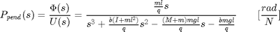
where,
(2)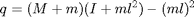
More specifically, the controller will attempt to maintain the pendulum vertically upward when the cart is subjected to a 1-Nsec impulse. Under these conditions, the design criteria are:
- Settling time of less than 5 seconds
- Pendulum should not move more than 0.05 radians away from the vertical
For the original problem setup and the derivation of the above transfer function, please consult the Inverted Pendulum: System Modeling page.
System structure
The structure of the controller for this problem is a little different than the standard control problems you may be used to. Since we are attempting to control the pendulum's position, which should return to the vertical after the initial disturbance, the reference signal we are tracking should be zero. This type of situation is often referred to as a regulator problem. The external force applied to the cart can be considered as an impulsive disturbance. The schematic for this problem is depicted below.

You may find it easier to analyze and design for this system if we first rearrange the schematic as follows.

The resulting transfer function 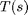 for the closed-loop system from an input of force to an output of pendulum angle is then determined to be the following.
(3)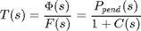
Before we begin designing our PID controller, we first need to define our plant within MATLAB. Create a new m-file and type in the following commands to create the plant model (refer to the main problem for the details of getting these commands).
M = 0.5;
m = 0.2;
b = 0.1;
I = 0.006;
g = 9.8;
l = 0.3;
q = (M+m)*(I+m*l^2)-(m*l)^2;
s = tf('s');
P_pend = (m*l*s/q)/(s^3 + (b*(I + m*l^2))*s^2/q - ((M + m)*m*g*l)*s/q - b*m*g*l/q);
Next we will define a PID controller.
PID control
This closed-loop transfer function can be modeled in MATLAB by copying the following code to the end of your m-file (whether you're using the transfer function form or the state-space representation of the plant). Specifically, we define our controller using the pid object within MATLAB. We then use the feedback command to generate the closed-loop transfer function as depicted in the figure above where the disturbance force is the input and the deviation of the pendulum angle from the vertical is the output.
Kp = 1; Ki = 1; Kd = 1; C = pid(Kp,Ki,Kd); T = feedback(P_pend,C);
Now we can begin to tune our controller. First let's examine the response of the closed-loop system to an impulse disturbance for this initial set of control gains. Enter the following code to the end of your m-file and run in the MATLAB command window. You should generate the response plot shown below.
t=0:0.01:10;
impulse(T,t)
title('Response of Pendulum Position to an Impulse Disturbance under PID Control: Kp = 1, Ki = 1, Kd = 1');
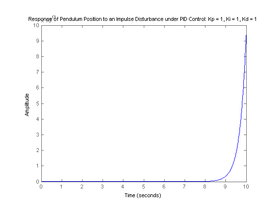 This response is still not stable. Let's begin to modify the response by increasing the proportional gain. Increase the 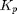 variable to see what effect it has on the response. If you modify your m-file to the following where = 100 and run in the command window, you should get the response plot shown below.
Kp = 100;
Ki = 1;
Kd = 1;
C = pid(Kp,Ki,Kd);
T = feedback(P_pend,C);
t=0:0.01:10;
impulse(T,t)
axis([0, 2.5, -0.2, 0.2]);
title('Response of Pendulum Position to an Impulse Disturbance under PID Control: Kp = 100, Ki = 1, Kd = 1');
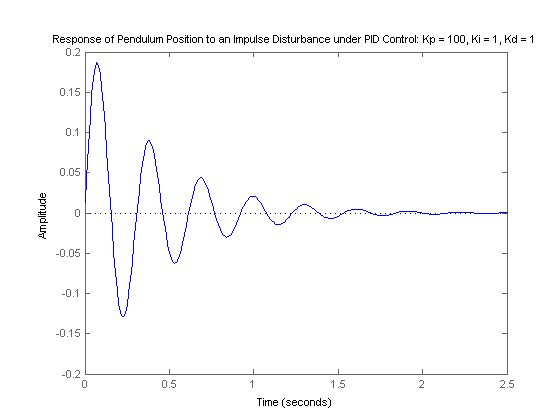 Right-clicking on the resulting plot and choosing Characteristics from the resulting menu allows you to identify important characteristics of the response. Specifically, the settling time of the response is determined to be 1.64 seconds, which is less than the requirement of 5 seconds. Since the steady-state error approaches zero in a sufficiently fast manner, no additional integral action is needed. You can set the integral gain constant 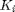 to zero to see for yourself that some integral control is needed. The peak response, however, is larger than the requirement of 0.05 radians. Recall that overshoot often can be reduced by increasing the amount of derivative control. After some trial and error it is found that a derivative gain of 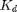 = 20 provides a satisfactory response. Modifying your m-file as follows and re-running should produce the response plot shown below
Kp = 100;
Ki = 1;
Kd = 20;
C = pid(Kp,Ki,Kd);
T = feedback(P_pend,C);
t=0:0.01:10;
impulse(T,t)
axis([0, 2.5, -0.2, 0.2]);
title('Response of Pendulum Position to an Impulse Disturbance under PID Control: Kp = 100, Ki = 1, Kd = 20');
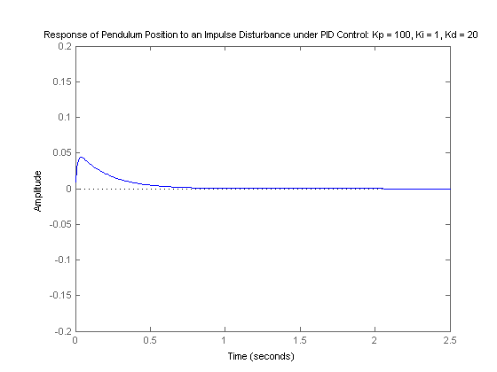 As you can see, the overshoot has been reduced so that the pendulum does not move more than 0.05 radians away from the vertical. Since all of the given design requirements have been met, no further iteration is needed.
What happens to the cart's position?
At the beginning of this page, a block diagram for the inverted pendulum system was given. The diagram was not entirely complete. The block representing the response of the cart's position was not included because that variable is not being controlled. It is interesting though, to see what is happening to the cart's position when the controller for the pendulum's angle is in place. To see this we need to consider the full system block diagram as shown in the following figure.

Rearranging, we get the following block diagram.

In the above, the block  is the controller designed for maintaining the pendulum vertical. The closed-loop transfer function 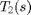 from an input force applied to the cart to an output of cart position is, therefore, given by the following.
is the controller designed for maintaining the pendulum vertical. The closed-loop transfer function 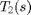 from an input force applied to the cart to an output of cart position is, therefore, given by the following.
(4)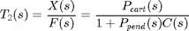
Referring to the Inverted Pendulum: System Modeling page, the transfer function for is defined as follows.
(5)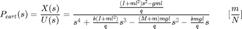
where,
(6)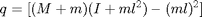
Adding the following commands to your m-file (presuming 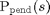 and are still defined) will generate the response of the cart's position to the same impulsive disturbance we have been considering.
P_cart = (((I+m*l^2)/q)*s^2 - (m*g*l/q))/(s^4 + (b*(I + m*l^2))*s^3/q - ((M + m)*m*g*l)*s^2/q - b*m*g*l*s/q);
T2 = feedback(1,P_pend*C)*P_cart;
t = 0:0.01:5;
impulse(T2, t);
title('Response of Cart Position to an Impulse Disturbance under PID Control: Kp = 100, Ki = 1, Kd = 20');
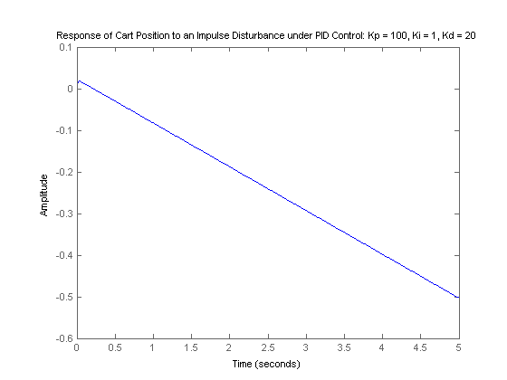 As you can see, the cart moves in the negative direction with approximately constant velocity. Therefore, although the PID controller stabilizes the angle of the pendulum, this design would not be feasible to implement on an actual physical system.